쿠키런

여러가지 에피소드로 이루어진 세상
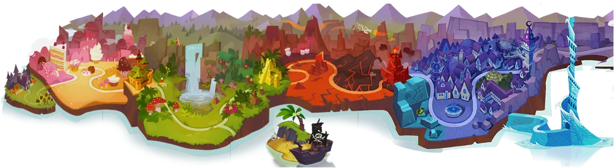
쿠키런의 맵은 난이도별로 여러가지 에피소드와, 에피소드 안에 또 여러가지 스테이지로 구성되어있습니다.
다양한 종류의 쿠키들
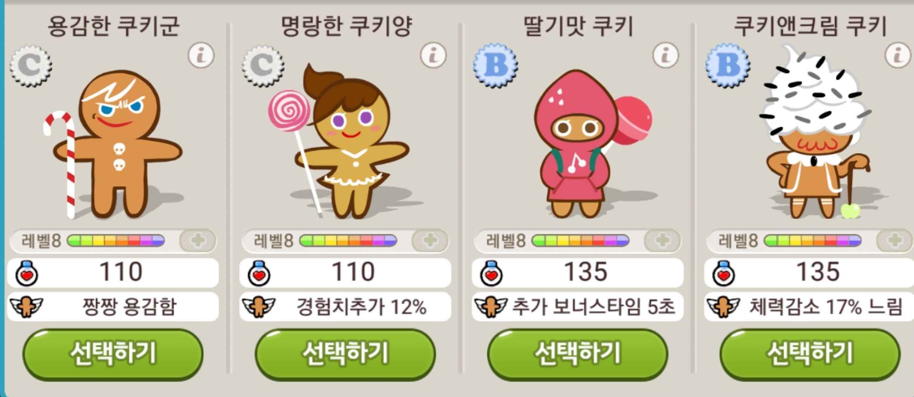
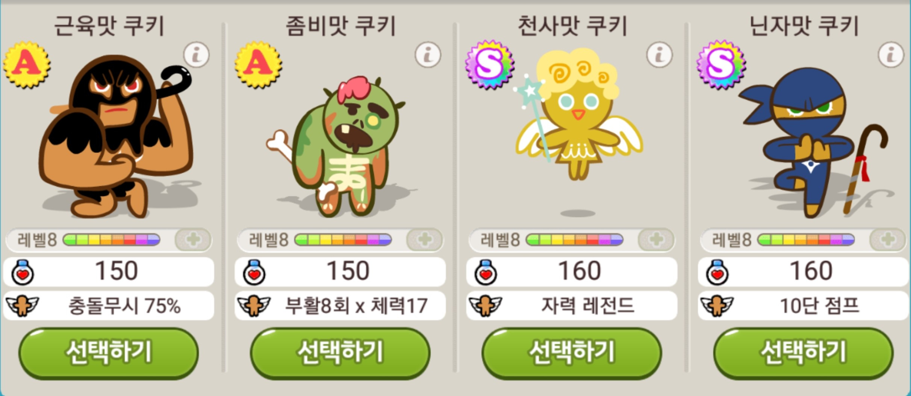
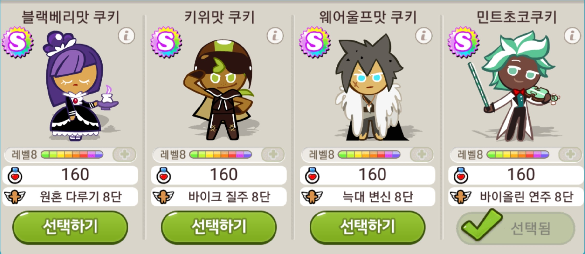
등급별로 다양한 종류의 쿠키들이 있습니다. 쿠키의 등급이 높을수록 높은 점수를 내기가 유리합니다.
다양한 종류의 펫들
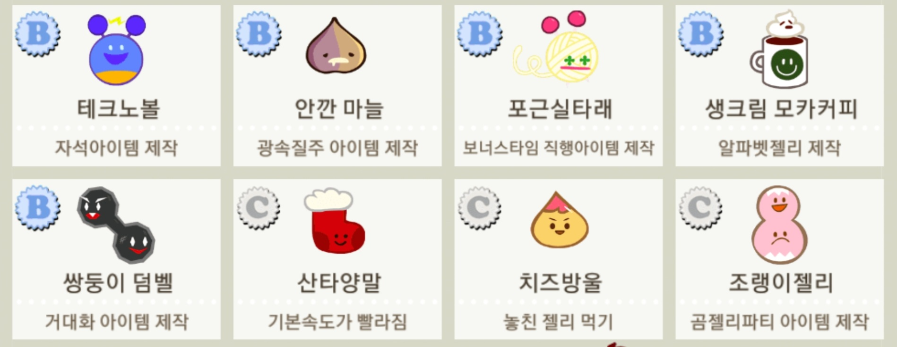
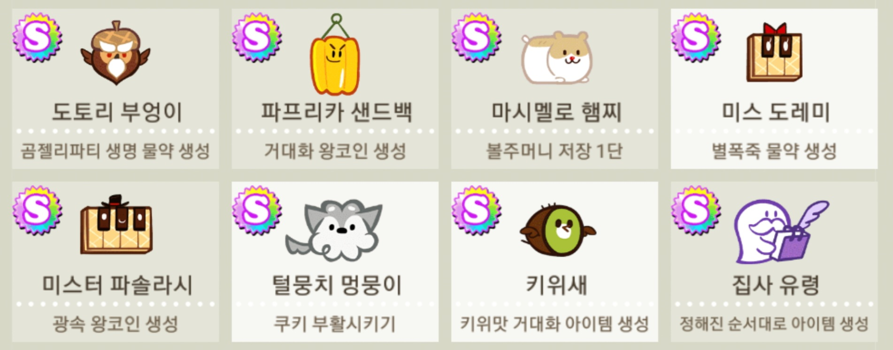
등급별로 다양한 종류의 쿠키들 뿐만이 아닌, 귀여운 펫도 있습니다.
펫의 도움을 받아 힘께 달리면서 높은 점수에 도전해보세요!
다양한 종류의 보물들
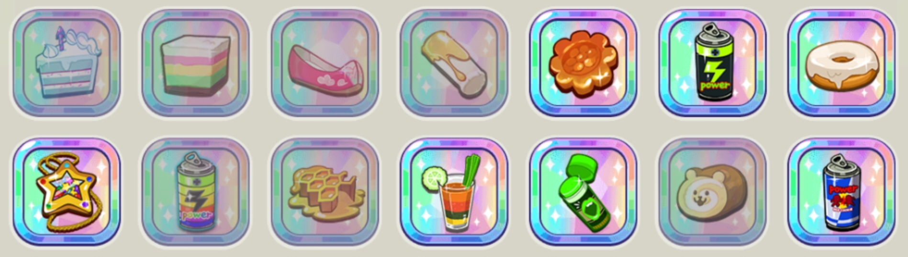
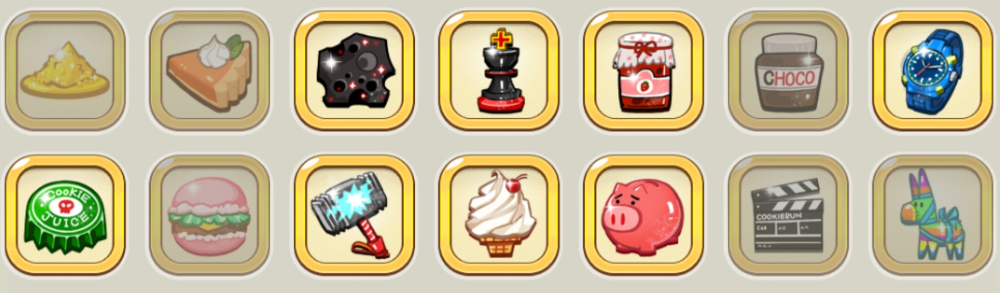
등급별로 다양한 종류의 아이템이 있는 "보물" 시스템이 존재합니다.
쿠키와는 별개로 게임 내에서 유용한 효과를 제공합니다.
재화를 사용해서 쿠키를 강화
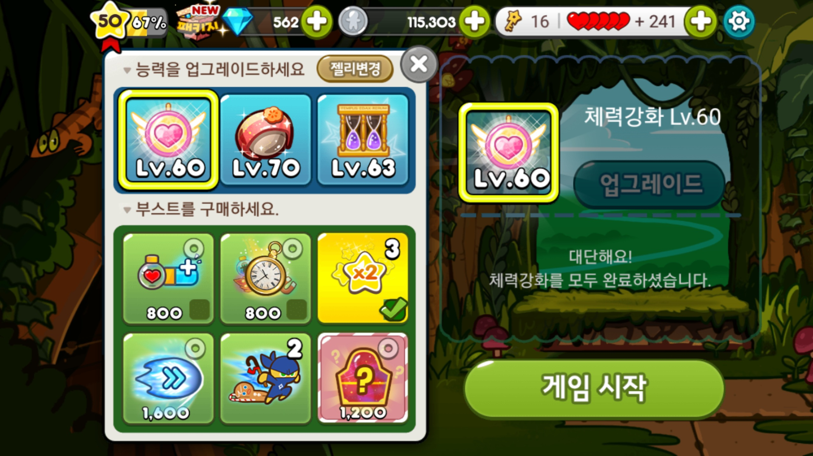
쿠키가 더 오래 달릴 수 있도록 체력을 강화하거나, 더 많은 점수를 얻을 수 있도록 젤리를 강화할 수 있습니다.
장애물을 피해 점프! 슬라이드! 점수를 획득하세요
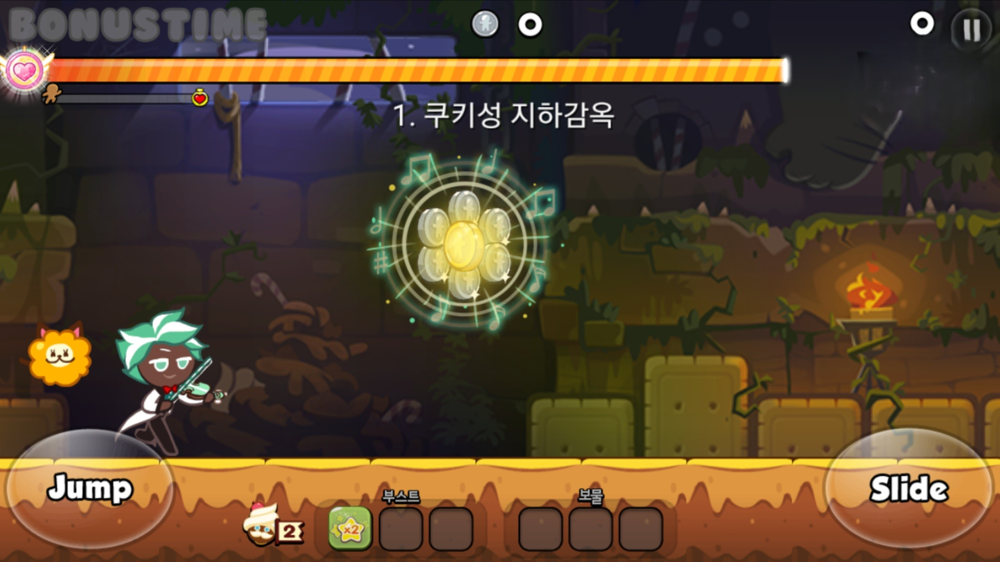
게임에 들어가게 되면, 점프와 슬라이드로 장애물을 피하면서 젤리를 먹고 점수를 획득하세요.
단 2개의 심플한 버튼이지만, 단계를 거듭할수록 결코 심플하지만은 않다는 것을 알게 될겁니다.
높은 점수를 위한 나만의 조합
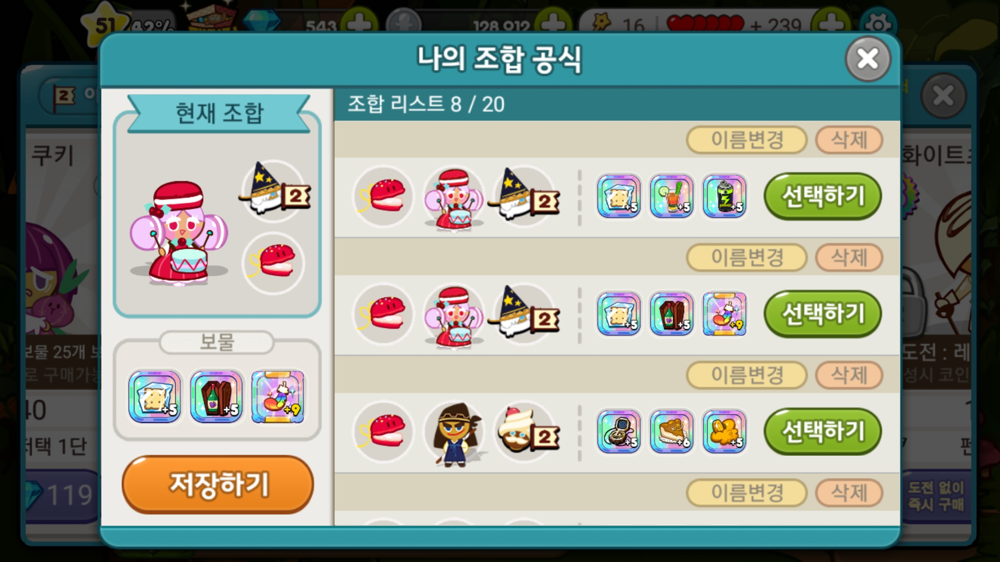
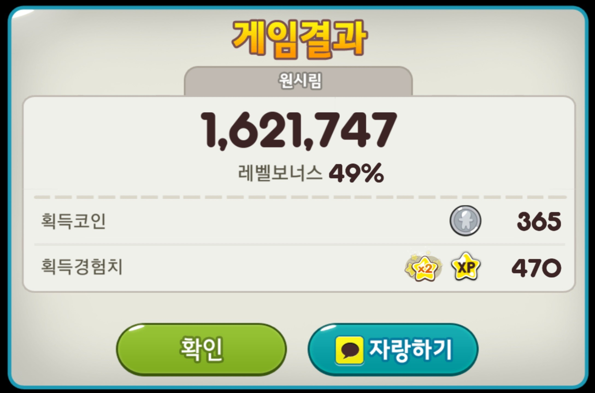
위에서 설명한 다양한 종류의 쿠키, 펫, 보물, 세 가지 요소들을 통해서
수많은 조합을 시도해보며 높은 점수를 위한 나만의 조합을 만들어보세요.
카카오톡 친구와 함께 경쟁
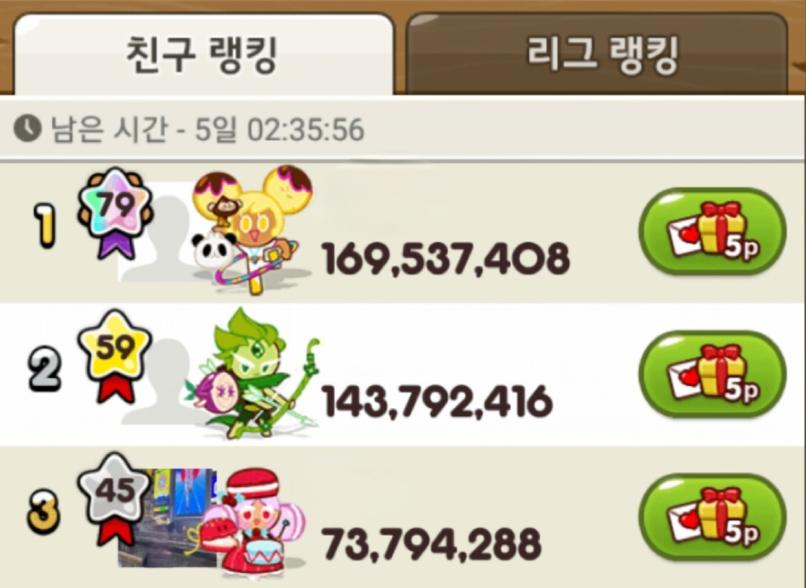
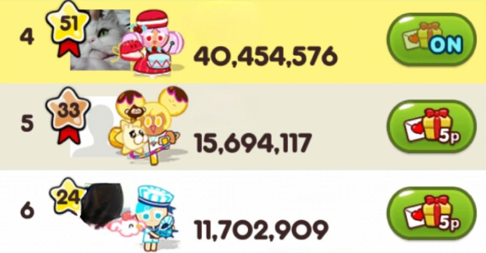
카카오톡의 계졍이 연동되어 카카오톡 친구들과 함께 점수를 가지고 경쟁할 수 있습니다.
다양한 게임 장르로의 파생
쿠키런 : 오븐브레이크
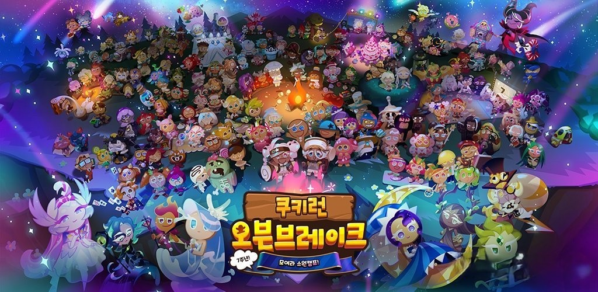
위에서 계속 설명한 '쿠키런:쿠키들의 오븐탈출 대작전'의 후속작입니다.
카카오가 서비스한 전작과 달리 제작사 '데브시스터즈'가 독자적으로 서비스하였으며
전작의 기본적인 시스템은 유지했지만, 새로운 컨텐츠를 추가함으로 다른 게임성을 보입니다.
쿠키런 : 마녀의 성
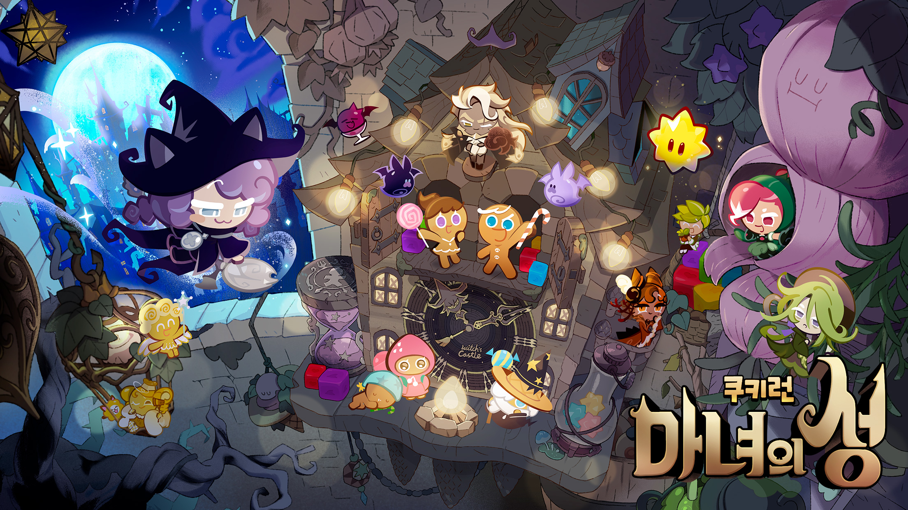
기존에 러닝 액션게임과는 다르게 쿠키런의 IP를 사용하여 퍼즐 게임이라는 새로운 장르를 만들었습니다.
쿠키런 : 킹덤
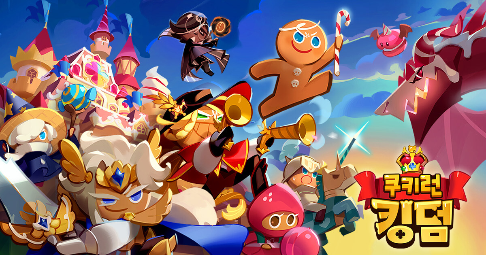
마찬가지, 기존에 러닝 액션게임과는 다르게 쿠키런의 IP를 사용하여 RPG 게임을 만들었습니다.
쿠키들은 각자 고유한 스킬을 가지고 있으며, 이렇게 개성있는 쿠키들과 함께 모험을 하거나
다양한 조합으로 유저들끼리 전투하며 경쟁할 수 있습니다.
쿠키런 : 모험의 탑
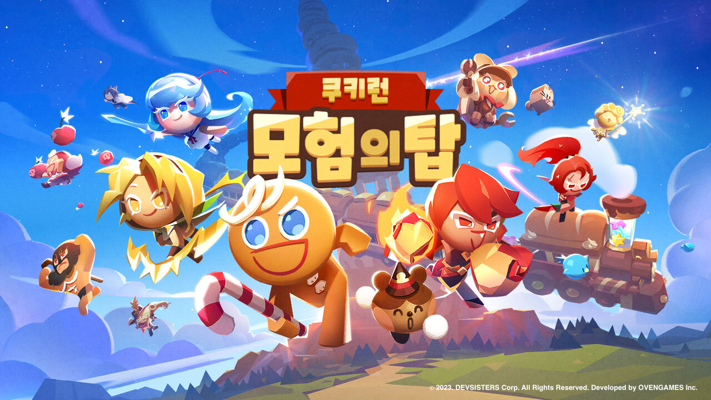
전작과 같은 RPG 장르의 게임이지만 고정된 필드에서 적을 처치하는 전작과 달리
다른 유저들과 함께 3D로 구현된 자신의 쿠키와 맵을 돌아다니며 적을 처치하는 게임입니다.
2024.06.26 출시를 앞두고 있으며, 현재 사전예약을 진행중입니다.
게임이 출시됐을 당시 카카오게임에는 쿠키런 뿐만이 아닌 애니팡, 모두의 마블, 윈드러너 등등의 게임들이 있었다.
이 게임들의 공통점으로는 게임을 한판 플래이 할 때마다 '하트'와 같은 재화가 소모되며,
이 재화는 카카오 친구들끼리 서로 하트를 주고받는 것으로 채울수 있었다. 때문에 평소에는 대화 한마디 나누지 않지만
서로 하트를 주고받는 훈훈한 장면이 연출되기도 했다. 다만, 너도나도 하트를 보내고 친구초대 메시지를 보내다보니
주변 사람들에게 민폐를 끼치는 사례가 종종 발생하기도 했다.